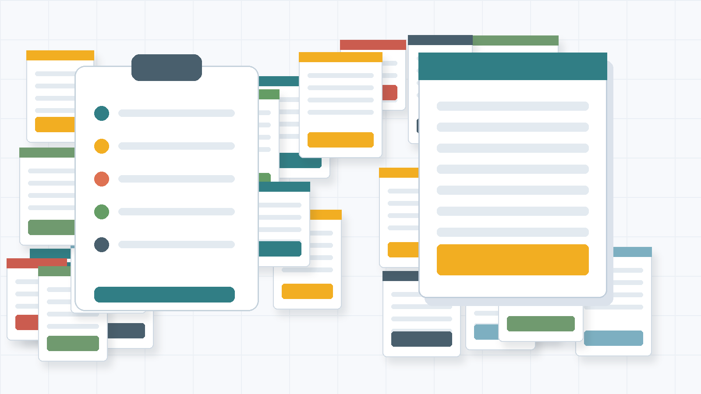

No poster selected
Open a judge link to load assigned posters, or use the demo links in the setup message.
Digital abstract award evaluation
Judges see their assigned posters, can update a submitted rating, and the admin view keeps the live leaderboard, missing scores, comments, and rubric detail in one place.

Open a judge link to load assigned posters, or use the demo links in the setup message.